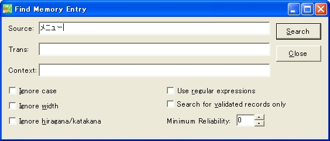
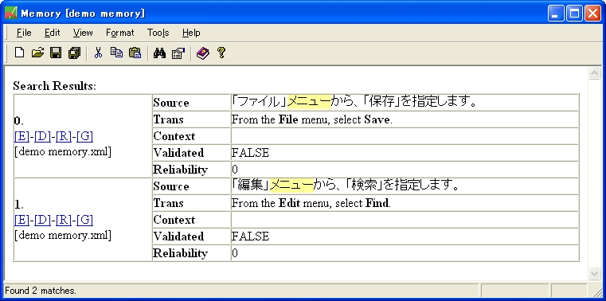
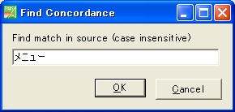

Felix provides powerful features for searching your translation memories (TMs). As of version 1.5, there is a new Search & Repalce feature that makes searching and replacing in your TMs even easier and more powerful.
The old search functionality is still available in Felix as the Quick Search feature. Quick Search lets you search by source and/or translation, as well as other features like context and reliability. Regular expressions are also fully supported.
Normally, the strings you enter in the source and translation fields will return all records with those strings somewhere in the source or the translation. To specify that you want to match the start or end of a source or translation, you can use regular expressions, like so:
To perform a search:

| Source: | The source to search for |
| Trans: | The translation to search for |
| Context: | The context to search for |
| Ignore case: | Select this checkbox if you want your search to be case-insensitive |
| Use regular expressions: | Select this checkbox to use regular expressions in your search. The regular expressions follow the VBScript format. See here for a description of the VBScript regular expression syntax. |
| Search for validated records only: | Limit your search to records that have been validated |
| Minimum Reliability: | Limit your search to records with the minimum reliability or higher |
If you leave a field blank, then that field will match any record. Leaving all fields blank will effectively retrieve all records in the memory. Matching strings in the Source, Trans, and Context fields are highlighted in yellow, unless regular expressions were used:

The Concordance feature ( Edit > Find > Concordance ) is also available as a kind of quick search feature. It searches the source fields only, and ignores case.

Additionally, you can automatically get concordances in the source entries and translation entries of any text in the Memory window.
To get source concordances, select some text and press ALT+C.
To get translation concordances, select some text and press CTL+ALT+C.
The Concordance feature is handy when used from the various interfaces. See for example 5.9 Search for Concordance.
Back (Add an Entry) | Next (Edit an Entry)